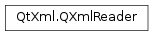

QXmlReader¶
Inherited by: QXmlSimpleReader
Detailed Description¶
The
PySide2.QtXml.QXmlReaderclass provides an interface for XML readers (i.e. parsers).This abstract class provides an interface for all of Qt’s XML readers. Currently there is only one implementation of a reader included in Qt’s XML module:
PySide2.QtXml.QXmlSimpleReader. In future releases there might be more readers with different properties available (e.g. a validating parser).The design of the XML classes follows the SAX2 Java interface , with the names adapted to fit Qt naming conventions. It should be very easy for anybody who has worked with SAX2 to get started with the Qt XML classes.
All readers use the class
PySide2.QtXml.QXmlInputSourceto read the input document. Since you are normally interested in particular content in the XML document, the reader reports the content through special handler classes (PySide2.QtXml.QXmlDTDHandler,PySide2.QtXml.QXmlDeclHandler,PySide2.QtXml.QXmlContentHandler,PySide2.QtXml.QXmlEntityResolver,PySide2.QtXml.QXmlErrorHandlerandPySide2.QtXml.QXmlLexicalHandler), which you must subclass, if you want to process the contents.Since the handler classes only describe interfaces you must implement all the functions. We provide the
PySide2.QtXml.QXmlDefaultHandlerclass to make this easier: it implements a default behavior (do nothing) for all functions, so you can subclass it and just implement the functions you are interested in.Features and properties of the reader can be set with
PySide2.QtXml.QXmlReader.setFeature()andPySide2.QtXml.QXmlReader.setProperty()respectively. You can set the reader to use your own subclasses withPySide2.QtXml.QXmlReader.setEntityResolver(),PySide2.QtXml.QXmlReader.setDTDHandler(),PySide2.QtXml.QXmlReader.setContentHandler(),PySide2.QtXml.QXmlReader.setErrorHandler(),PySide2.QtXml.QXmlReader.setLexicalHandler()andPySide2.QtXml.QXmlReader.setDeclHandler(). The parse itself is started with a call toPySide2.QtXml.QXmlReader.parse().See also
-
class
PySide2.QtXml.QXmlReader¶
-
PySide2.QtXml.QXmlReader.DTDHandler()¶ Return type: PySide2.QtXml.QXmlDTDHandlerReturns the DTD handler or 0 if none was set.
-
PySide2.QtXml.QXmlReader.contentHandler()¶ Return type: PySide2.QtXml.QXmlContentHandlerReturns the content handler or 0 if none was set.
-
PySide2.QtXml.QXmlReader.declHandler()¶ Return type: PySide2.QtXml.QXmlDeclHandlerReturns the declaration handler or 0 if none was set.
-
PySide2.QtXml.QXmlReader.entityResolver()¶ Return type: PySide2.QtXml.QXmlEntityResolverReturns the entity resolver or 0 if none was set.
-
PySide2.QtXml.QXmlReader.errorHandler()¶ Return type: PySide2.QtXml.QXmlErrorHandlerReturns the error handler or 0 if none is set.
-
PySide2.QtXml.QXmlReader.feature(name)¶ Parameters: name – unicode Return type: PySequence If the reader has the feature called
name, the feature’s value is returned. If no such feature exists the return value is undefined.If
okis not 0:*okis set to true if the reader has the feature calledname; otherwise*okis set to false.
-
PySide2.QtXml.QXmlReader.hasFeature(name)¶ Parameters: name – unicode Return type: PySide2.QtCore.boolReturns
trueif the reader has the feature calledname; otherwise returnsfalse.
-
PySide2.QtXml.QXmlReader.hasProperty(name)¶ Parameters: name – unicode Return type: PySide2.QtCore.boolReturns
trueif the reader has the propertyname; otherwise returnsfalse.
-
PySide2.QtXml.QXmlReader.lexicalHandler()¶ Return type: PySide2.QtXml.QXmlLexicalHandlerReturns the lexical handler or 0 if none was set.
-
PySide2.QtXml.QXmlReader.parse(input)¶ Parameters: input – PySide2.QtXml.QXmlInputSourceReturn type: PySide2.QtCore.boolReads an XML document from
inputand parses it. Returnstrueif the parsing was successful; otherwise returnsfalse.
-
PySide2.QtXml.QXmlReader.parse(input) Parameters: input – PySide2.QtXml.QXmlInputSourceReturn type: PySide2.QtCore.boolParses the given
input.
-
PySide2.QtXml.QXmlReader.property(name)¶ Parameters: name – unicode Return type: PySequence If the reader has the property
name, this function returns the value of the property; otherwise the return value is undefined.If
okis not 0: if the reader has thenameproperty*okis set to true; otherwise*okis set to false.
-
PySide2.QtXml.QXmlReader.setContentHandler(handler)¶ Parameters: handler – PySide2.QtXml.QXmlContentHandlerSets the content handler to
handler.
-
PySide2.QtXml.QXmlReader.setDTDHandler(handler)¶ Parameters: handler – PySide2.QtXml.QXmlDTDHandlerSets the DTD handler to
handler.
-
PySide2.QtXml.QXmlReader.setDeclHandler(handler)¶ Parameters: handler – PySide2.QtXml.QXmlDeclHandlerSets the declaration handler to
handler.
-
PySide2.QtXml.QXmlReader.setEntityResolver(handler)¶ Parameters: handler – PySide2.QtXml.QXmlEntityResolverSets the entity resolver to
handler.
-
PySide2.QtXml.QXmlReader.setErrorHandler(handler)¶ Parameters: handler – PySide2.QtXml.QXmlErrorHandlerSets the error handler to
handler. Clears the error handler ifhandleris 0.
-
PySide2.QtXml.QXmlReader.setFeature(name, value)¶ Parameters: - name – unicode
- value –
PySide2.QtCore.bool
Sets the feature called
nameto the givenvalue. If the reader doesn’t have the feature nothing happens.
-
PySide2.QtXml.QXmlReader.setLexicalHandler(handler)¶ Parameters: handler – PySide2.QtXml.QXmlLexicalHandlerSets the lexical handler to
handler.
-
PySide2.QtXml.QXmlReader.setProperty(name, value)¶ Parameters: - name – unicode
- value –
void
Sets the property
nametovalue. If the reader doesn’t have the property nothing happens.
© 2018 The Qt Company Ltd. Documentation contributions included herein are the copyrights of their respective owners. The documentation provided herein is licensed under the terms of the GNU Free Documentation License version 1.3 as published by the Free Software Foundation. Qt and respective logos are trademarks of The Qt Company Ltd. in Finland and/or other countries worldwide. All other trademarks are property of their respective owners.